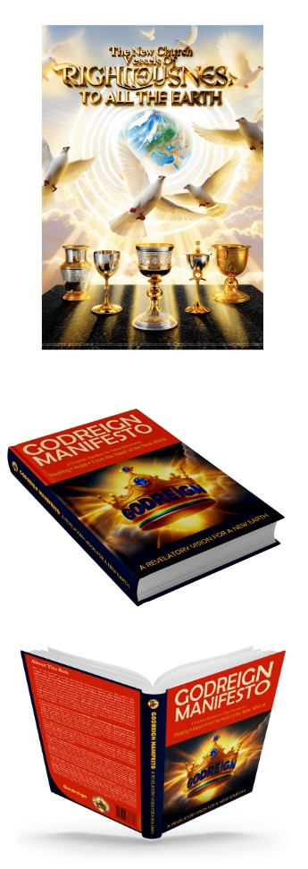

|  |
Godreign Government On Earth
A Long Awaited Solution From Above After all the skyscrapers have risen, after roads have stretched across deserts and river, After satellites have mapped the heavens and machines have whispered the language of algorithms, what remains of a soul untouched by truth? What becomes of a nation with brilliant cities but broken spirits? What is the value of progress that leads nowhere beyond the grave? In a world obsessed with advancement, humanity has built towering economies, engineered cities of steel and glass, and crafted technologies that pierce the clouds, yet the soul remains disoriented and wandering. The glory of technological and economic growth, while dazzling, becomes hollow when severed from eternal purpose. The modern world has neglected the one crown that gives meaning to all other achievements: spiritual development. What profit is there in building the future, if the soul is unprepared for eternity? What legacy can a nation truly leave behind if its people inherit the earth, but lose their place in heaven? It is here that Godreign emerges, not as a theory, not as a rebranded ideology, but as a prophetic alignment with heaven’s original blueprint for Earth. It is the embodiment of Christ’s prayer in Matthew 6:10: “Thy kingdom come, Thy will be done, on earth as it is in heaven.” This is not democracy dressed in new language. It is not human ideology upgraded. Godreign is heaven revealed. A divine system of governance rooted in righteousness, justice, mercy, and eternal truth. Where democracy exalts public opinion, Godreign exalts divine instruction. Where earthly governments cater to personal freedom at any cost, Godreign is anchored in spiritual order and the eternal destiny of every soul. Godreign is built on the divine science of love, not abstract sentiment, but love that governs with justice, compassion, humility, and sacred discipline. It is not driven by personal gain, party loyalty, or fleeting applause, but by spiritual brotherhood and radical selflessness. It is justice with purity, power with compassion, leadership that kneels to serve. In a world drowning in vanity and vice, where politics has become performance, and policy a tool of indulgence, Godreign walks a narrow road: higher, holy, and eternally relevant. This is a governance where: Love becomes law, such that the law of morality, for instance, flows from hearts of love. Purity becomes power. And every policy considers not just earthly consequence, but eternal placement. Where democracy builds cities of lust and industries of moral confusion, Godreign seeks to moralize science and sanctify innovation, to direct every advancement, whether digital, medical, or technological, toward the healing of souls, the upliftment of the poor, and the preparation of nations for heavenly royalty. Godreign, however, does not appear overnight. In the midst of a storm, it rises to seal spiritual gaps that lead to cycles of sorrow and judgment in societies. The earth is being infiltrated by antichrist systems, demonic ideologies, and even manipulated beings, unauthorized intrusions from extraterrestrial and spiritual realms, designed to distort the divine image in humanity. Through corrupted pregnancies and systemic social engineering, these agents now parade immorality under the protection of law. They promote identity confusion, glorify sexual perversion, and redefine what it means to be human. Make no mistake: these are not simply social trends. They are spiritual assaults, strategies of deception and eternal sabotage. Behind the curtain of “freedom” lies a sinister agenda, designed to disconnect the soul from its Creator and derail heaven’s inheritance for God’s children. But God is not silent. He is not threatened; He permits it to eventually transform the enemy's plans to His ultimate glory. He is positioning a remnant. A kingdom people. Those who do not merely survive, but shine. Those who carry the fragrance of heaven into the polluted streets of Babylon. Those who will not imitate Babylon but embody Zion. Godreign does not simply seek to replace a government; it seeks to restore a kingdom. It is a call for nations to stop drinking from the cup of Sodom and Gomorrah, to stop funding destruction with taxpayers’ gold, and to rise into their prophetic identity, as builders of holy culture, defenders of divine design, and guardians of generational destiny. Where democracy dissolves marriages, Godreign rebuilds family. Where governments legalize confusion, Godreign restores order and identity. Where the world trades truth for trends, Godreign holds the eternal roadmap firmly in hand. This is not a reaction to failure, but a divine restoration of order. It is a clarion call to all governments, leaders, and citizens: To return. To realign. To reign in righteousness. Rejecting Deception. Choosing Eternal Life. Just as BRICS nations are breaking free from dollar dependency, Godreign calls the nations to dump the democracy that costs souls their eternity. The democracy that silences God. That legalizes what heaven calls sin. That wins elections, but loses souls. Godreign is not merely an alternative. It is the answer. Not just for today’s justice, but for tomorrow’s eternity. Not just for policy, but for paradise. The world has reached the edge. This is the terminal hour of Western dominion. And only one door leads forward: The door of righteousness, and the door of divine order for the success of human souls. Let those who have ears, hear. Let those who have hearts, choose. Let the nations of the earth rise, not in rebellion, but in holy submission to the reign of God on earth. The kingdoms of this world are fading. But the kingdom of God shall stand forever. |